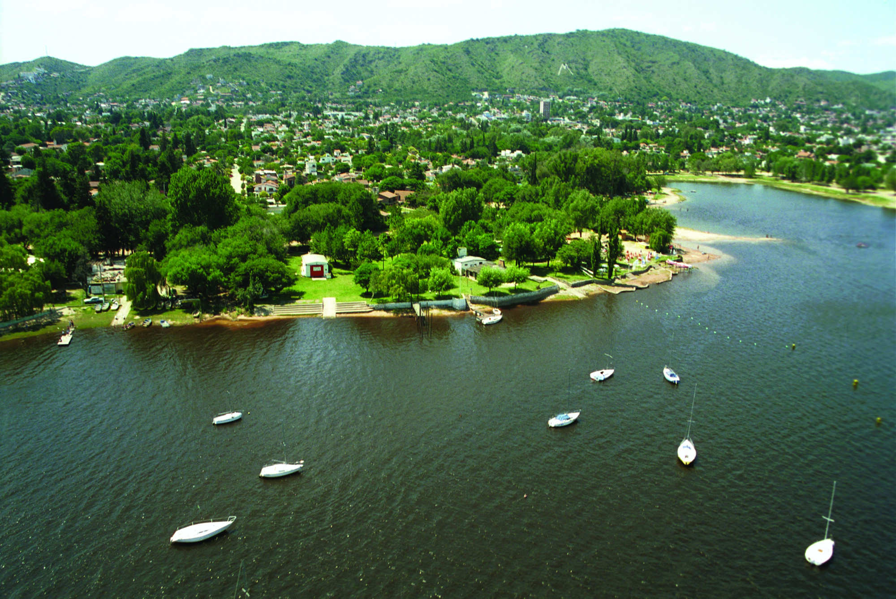

Temporada 2024- Lo mas visitado

Esta reserva de agua ofrece, paseos en bote, nado, navegación y miradores panorámicos.
Cabalgatas y paisajes en lo alto de las montañas.

Lugar para hacer trekking con gran atractivo visual y panorámico.
Cobinación de deporte y paisaje en una misma perspectiva.

Combinaciones perfectas para disfrutar.